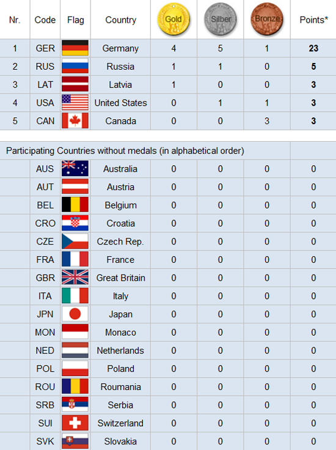

Gold, Silber und Bronze für deutsche Bobpiloten

Der Rekordweltmeister aus Sachsen setzte sich bei den Winterspielen in China
nach vier Läufen mit 0,49 Sekunden Vorsprung vor seinem
Teamkollegen Johannes Lochner durch.
Christoph Hafer sorgte am Dienstag mit Bronze für den ersten Dreifach-Erfolg der olympischen
Bob-Geschichte.
Nach vier Olympiasiegen im Rodeln und zweimal Gold im Skeleton war es für
Deutschland bereits der siebte Triumph im Eiskanal von Yanqing.
Schon im ersten Lauf war der deutsche Fahnenträger mit dem neuen Gefährt zum Bahnrekord von 59,02 Sekunden gerast.
Im dritten Lauf demonstrierte
Friedrich erneut seine Vormachtstellung, drückte den Bahnrekord auf 58,99 Sekunden.
Gleich danach leistete sich Lochner einen groben Fehler
in der Kurve 13, weshalb er mit dem großen Rückstand von
0,48 Sekunden in den Finallauf ging. Auch zum Abschluss fuhr Friedrich erneut die beste Zeit des Felds.

Zurück zur Startseite